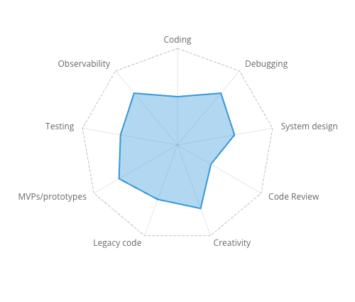
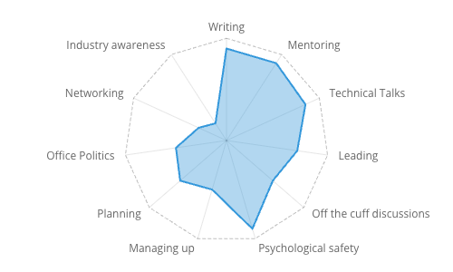
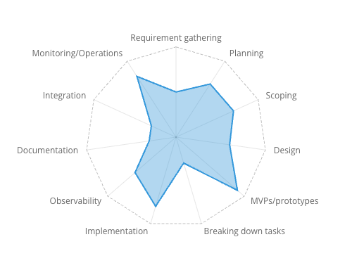

Visualizing my strengths and areas for growth with RPG radar charts
Apr 12, 2025 · 1737 words · 9 minutes read
Sometimes I just love a good visualization, and there’s something about radar charts that makes them so approachable. Maybe it’s the asymmetry or the mapping to 2D space, but they give an immediate view across multiple dimensions.
The other day, I was chatting with a colleague of mine about different areas you can grow in as a software engineer, and I was reminded of something I had been thinking about for a while: what would it look like to visualize your strengths and weaknesses with something like a radar chart? With my colleague, I sketched out a rough diagram of what that could look like for a few charts on a whiteboard: six different axes for technical skills, six different axes for non-technical skills, and six different axes for focus areas.
We went through each one together, thinking through where each of us would fall on different axes. How would I rate myself on coding, technical design, mentoring, or writing? How would he rate himself, and how would I rate him?
After we had filled it in and discussed where we thought we were, we were left with pretty good visualizations of our skill sets, where we were strong, and where we could grow more. It was an interesting exercise, and I wanted to think through it a little more here. What makes it a good exercise? Where does it fall short? What could make it even better?
The good part: evaluating my own strengths and areas for growth
If you came to just see my strengths and weaknesses, you’ve come to the right place. I regularly take some time to reflect and think through how I’ve grown and where I can continue to grow, and I’ve organized some recent thoughts into a few different groupings, each with a few different axes that came to mind, visualized in radar charts.1
Technical skills

For my technical skills, I think I’m pretty good across the board. I would say my strengths lie in debugging, creativity, and MVPs/prototypes. I would say my coding and code review are likely the main areas for growth; for coding, I find myself only wanting to learn just enough of the programming language to solve the problem at hand, and for code review, I could be more diligent about both the depth of the reviews and the latency.
Soft(er) skills

For the softer skills, I think my main strengths are in writing, mentoring, technical talks, and fostering psychological safety. I’m pretty good at leading projects and planning, but I know I can improve at off the cuff discussions (I usually do better with writing or prepared talks) and navigating the subtleties of big company politics. Some of my other main growth areas are networking (like meeting more people across the company and staying in touch with people I’ve worked with in the past, not like TCP) and awareness of the industry at large, much as I may read HN.
The start of the asterisks
There are a few caveats that are worth mentioning here that we can discuss later:
- There’s always room to grow, even for the ones I’ve ranked higher.
- What’s the scale? What does 30% of the way to the edge mean?
- Why did I select those items? What about this other one I’m missing?
- How accurate is my own assessment?
- What do these mean? Why aren’t you 10/10 at code review?
- What am I doing evaluating my technical skills in my free time?
Those are all very valid points. Even with those asterisks, assuming I can trust my own evaluation (more on this later too), this is a neat way to see at a glance where my strengths and weaknesses are, and the visualization makes it clear where there’s room to grow.
How effective is this?
The arbitrary scale
The first thing that comes to mind is the arbitrary scale, like skill bars on a resume. If Bjarne Stroustrup rates himself at 7/10 for C++, where does that leave the rest of us? Zero is easy, but 100% is obviously subjective. Clearly I’m not at 100% for anything, except maybe for self-awareness and knowing I shouldn’t rate myself at 100% for anything.
The critical part is that I know what the scale is (or, if working with someone else, we calibrate what we think these are together). I find the value to be in evaluating the space to grow, and it really doesn’t matter if your end marker is some threshold you want to meet or the highest attainable goal in the universe. There’s no cheating here, only lying, and the important part for each rating is the honest reflection.
A fair evaluation
There’s also the problem of fairly evaluating yourself, particularly since you may not know your own blind spots. I think I’m pretty self-aware, but of course I’d think that. I also find it very helpful to anchor with feedback I’ve gotten from others. While I think I’m pretty good at writing and mentorship, I’ve also gotten very positive feedback about both, which helps me comfortably set those higher.
On the other end of that spectrum, I’m also likely my harshest critic, and I may be ranking some areas unfairly lower. Take my technical abilities, for example, where I’m likely subconsciously comparing myself to extremely gifted engineers that I’ve worked with or seen in the past. Ironically this also seemed like a good spot to cite the Bjarne Stroustrup anecdote, but I hesitated at first, feeling that my own self-evaluation skills must be much worse than his!
Honesty and vulnerability
Both of the above points have an underlying emphasis on honesty and vulnerability, a key part of doing this exercise. On your own, I think it’s a great way to reflect, but as an exercise with someone else, it requires a good level of trust and psychological safety, with that extra mental step to clearly call out your shortcomings. It’s OK to have room to grow, and it should be OK with whoever you’re working with as well.
That does make it feel like it wouldn’t translate well into relationships without trust or with power imbalances. For example, if I was a junior engineer sending out my resume to hiring managers, I wouldn’t want to tell anyone that my coding skills are a 1/10. If I had crippling imposter syndrome and was worried that my manager was going to fire me, I may be less comfortable being honest about my weaknesses.
I’ve shared my own evaluation because I value transparency and I’m in a very fortunate position to lead by example for psychological safety. I have a strong work history and confidence in my abilities, and really if anyone reads this and doesn’t want to hire me because I didn’t rate my coding abilities as 10/10, it likely wouldn’t have been a good fit anyways!
What do you even include for the axes?
It’s clearly not valuable to put everything up here, and I’ve omitted things like professionalism, patience, or time management. For myself, I can assume those are pretty much all taken care of, though my time management definitely didn’t used to be as good as it is now. For someone else, maybe time management is something they’re actively working on and they should track it for themselves.
There are also things that might just not be worth including. Should I include “computer graphics” if it’s just going to be marked as a zero anyways? Maybe if I’m doing some introspection on my familiarity with different areas in computer science, but maybe not if I’m evaluating my abilities with the lens of my current role.
In case it’s not clear by now, this is also not “Alex’s exhaustive list of the things that every software engineer needs”. These are skills and areas that I’ve noticed in my day to day job that come into play. The ones I’ve included are different for different roles and they’re not all needed at different companies. They also come with huge asterisks; who cares about office politics really? I don’t care in the grand scheme of things, but I care in the scope of understanding how the game works so I can ensure a coworker of mine gets proper recognition for the important work they’re doing or help a junior colleague get promoted.
Where does the radar chart fall short, and how could it be better?
I think it’s a pretty neat visualization, but there are some clear drawbacks.
One is that there’s some obvious crossover between axes that isn’t represented in these charts. Empathy and communication skills are the building blocks for mentoring, writing, technical talks, leading, and much more. Breaking them up into these more concrete areas makes it easier to think about how to grow; it’s easier to work with “I want to practice my technical talks” than an amorphous “I want to improve my general communication skills”. But having them as discrete axes loses some of that foundational, crossover effect, where improving at one will likely make you better at another.
Another drawback is the implied relationships between axes on the chart. For one, it appears to give the same weight to two areas that may not have the same importance. I’ve included both “networking” and “mentoring” above on the same graph, but being a good mentor is so much more important to me. Additionally, things next to each other feel like they should be related, even though the axes above are independent.
I think an interesting thought exercise is to think about the order of the categories. Maybe grouping similar items together would allow that crossover effect to be more visible, or maybe you can think about steps in a process. For example, you could look at the different parts of a project and how good you are at the different areas (these are arbitrary values, not necessarily my own evaluation):

With those caveats, I think it’s a neat visualization. Like writing, one of the real benefits of this exercise is the thinking that it forces you to do, particularly the honest evaluation of where you are.
There’s no perfect way to do it, but I like these visuals.